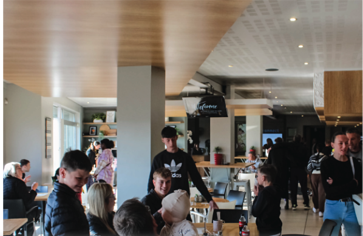
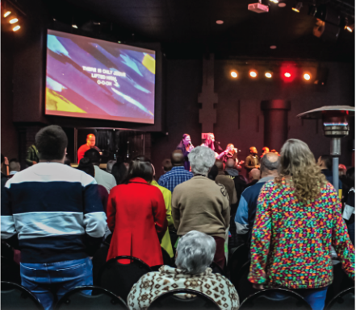

Every Friday from 18:30. A space for young adults to build real friendships, grow in the Word, and stay planted in community while navigating work, study, calling, and life.
Young adulthood can feel scattered and lonely. We're building a room where people are known, welcomed, and spiritually strengthened together.
We don't want casual attendance only. We want roots, honesty, prayer, scripture, and the kind of growth that lasts beyond one Friday night.
This season matters. We're helping young adults follow Jesus with conviction in relationships, work, study, leadership, and calling.
Young Adults Connect is for post-school young adults who want more than surface-level Christianity and more than surface-level friendship.
Whether you're studying, working, building a career, starting a family, figuring things out, or all of the above, there is room for you here.
You don't need to have everything together before you walk in. You just need to come hungry for God and open to real connection.
Fill in the form and we'll be in touch before the next Friday night. No pressure, no awkward spotlight, just a simple way to connect.

Young Adults Connect is a room to belong, be sharpened, and keep walking with Jesus together.